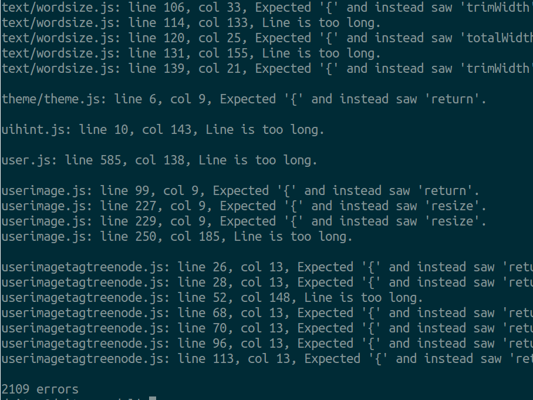
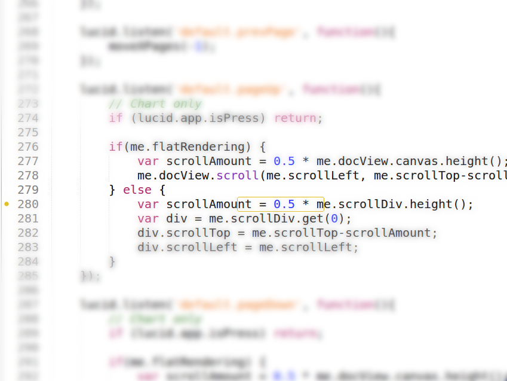
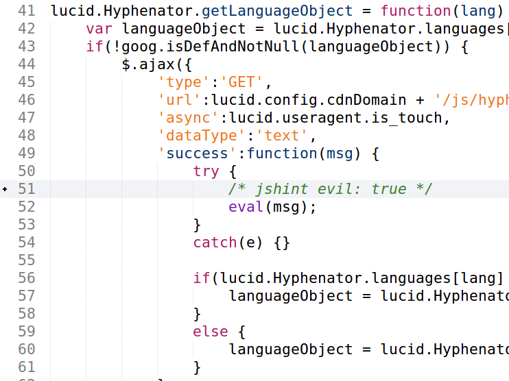
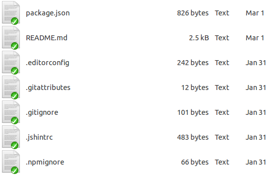
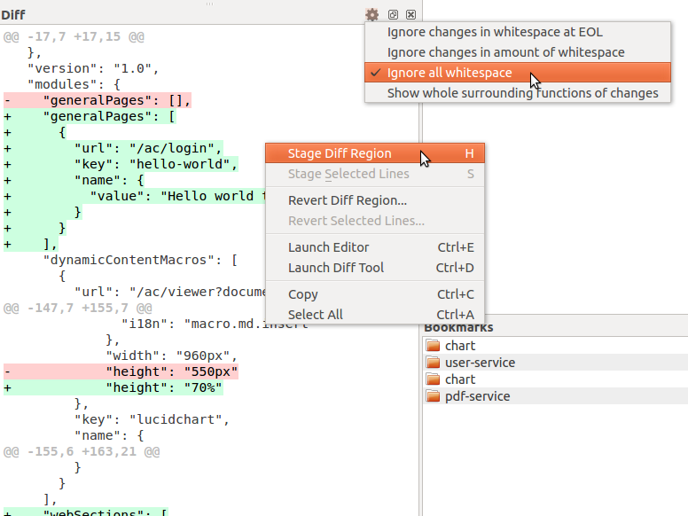

Gotta have coding standards!
Agree upon
Maintain Refer to
Why?
Consistency
Avoid some errors
Less thinking
Easier to read
Why have CS?
Less time spent thinking about how things should be written (at a low level!)
Easier to read and modify code that you’re not familiar with
What?
Language conventions (HTML, CSS, JS, Scala, SQL)
Filesystem layout
Version control
Workflow
The reality
Conventions are hard to follow
Manually...
Conventions are hard to follow
Why?
We forget
Own habits
Existing code
Too much work
We forget, hard to memorize (coding standards can be dozens of pages long - ex. isobar)
We have our own habits
Existing code can give a bad example
Too much work! (e.g. require alphabetizing CSS properties)
Every guideline should cost less to implement than the benefit it brings
Every guideline should cost less to implement than the benefit it brings
So what do we do?
Not follow a guideline
Bring down its cost
Tools to the rescue!
- Tools help bring down the cost
- But you have to use them efficiently!
Bare CLI not very useful

Tools rule #1
Run automatically, get feedback early

- // jshint as a good example
- Manually running a command in the terminal is not nearly as helpful or efficient as getting real-time feedback in your editor.
- Immediate feedback will let you catch errors before you make more of them
- All this may sound obvious, but these concepts should be applied to each tool you try to use
Tools rule #2
Configurable
{
"asi" : true, // suppress warnings about semicolons
"curly" : true, // always put curly braces around blocks
"eqeqeq" : false, // allow non-strict comparisons
"latedef" : true, // prohibits using a variable before definition
"eqnull" : true, // alllow == null
"newcap" : true, // capitalize constructor names
"camelcase": true, // enforce camelCase or UPPER_CASE
"expr" : true, // suppress warning "Expected an assignment..."
"gcl" : true, // compat with Google Closure Linter
"immed" : false, // don't be bothered by IIF syntax
"sub" : true, // don't complain about [] vs dot notation
"unused" : "vars", // warn about unused variables
"maxlen" : 120, // maximum length of a line
"maxerr" : 1000
}
- filter out the noise (stuff we don't care about)
- adapt to our agreed upon coding styles
- try to express as much of the convention as possible through config
Make exceptions

- There will always be exceptions
- You don't have to see the same warnings again and again
- With this, reaching 0 linter warnings becomes possible!
Tools rule #3
Shared configuration!

- Check `.jshintrc` into your repo(s) so that everybody is on the same page
- keep up to date
- have changes propagate to everyone automatically
Whitespace consistency
.editorconfig
# top-most EditorConfig file
root = true
# defaults for all files
[*]
charset = utf-8
indent_style = tab
end_of_line = lf
indent_size = 4
trim_trailing_whitespace = true
insert_final_newline = true
# python loves spaces
[*.py]
indent_style = space
Handling whitespace changes
git diff -w
git blame -w
git merge -Xignore-space-change
git rebase --ignore-space-change
Handling whitespace changes (cont)
Put whitespace changes on a separate commit

Armed with tools, now what?
- Go berserk and try to change the entire code base at once?
Adoption strategy
Write NEW code properly
Refactor the parts you work on
Preserve localized standards
No excuse not to write new code properly!
Code reviews
Speak up if it smells!
Code reviews: speak up if you see a "code smell", don't be shy
General rule
Make code readable and clear
...like it's written by one person
Leave the code better than it was
Action items
Install necessary tools (chef?)
Linter tools for scala?
Check in dotfiles
Write compliant code
Enforcing standards: pseudocode
while(!codingStandards.followed) {
reason = programmer.whyNot();
if(reason.isAcceptable) {
codingStandards.patch(reason);
} else {
programmer.fixCode(feedback);
}
}